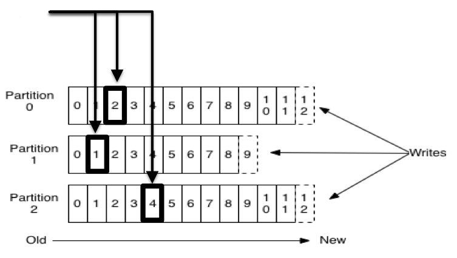

Distributed Commit Logs with Apache Kafka
James Ward | @_JamesWard
Platform Evangelist @ Salesforce.com

Really bad analogy time

Kafka = Event Stream - Distributed & Redundant
Kafka Fundamentals
- Messaging System Semantics
- Clustering is Core
- Durability & Ordering Guarantees
Use Cases

- Modern ETL / CDC
- Data Pipelines
- Big Data Ingest
Records

- Name, Value, Timestamp
- Immutable
- Append Only
- Persisted
AKA: A Log
Producers & Consumers

- Broker = Node in the cluster
- Producer writes records to a broker
- Consumer reads records from a broker
- Leader / Follower for cluster distribution
Topics & Partitions

- Topic = Logical name with 1 or more partitions
- Partitions are replicated
- Ordering is guaranteed for a partition
Offsets

- Unique sequential ID (per partition)
- Consumers track offsets
- Benefits: Replay, Different Speed Consumers, etc
Consumer Groups

- Logical name for 1 or more consumers
- Message consumption is load balanced across all consumers in a group
Demo Time!
Clients
- JVM is official
- Most other platforms via the community
- Polling Based
Akka Streams

- Impl of Reactive Streams
- Source / Sink Stream Programming
- Back-pressure, etc
- Kafka Adapter:
https://github.com/akka/reactive-kafka
Code!
https://github.com/jamesward/hello-play-kafka/tree/devoxxQuestions?
Reach out: @_JamesWard